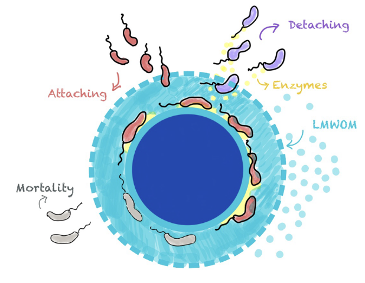
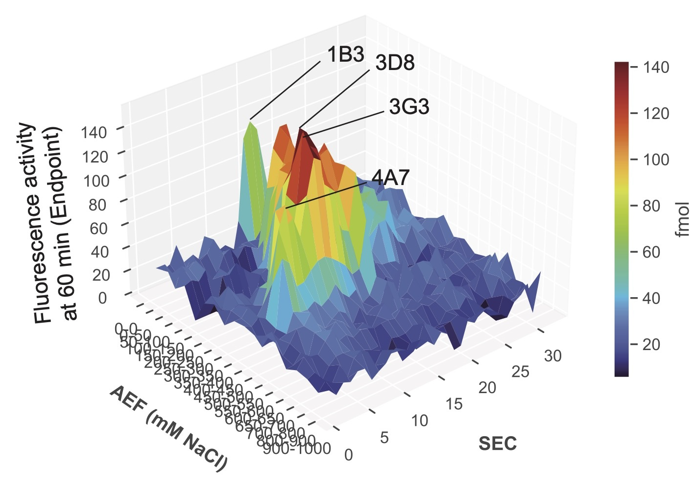
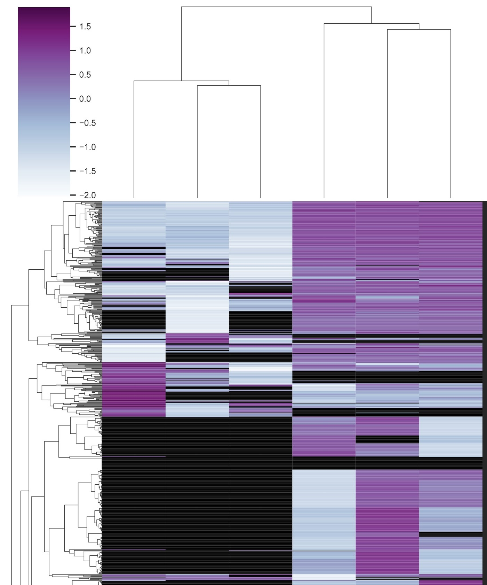
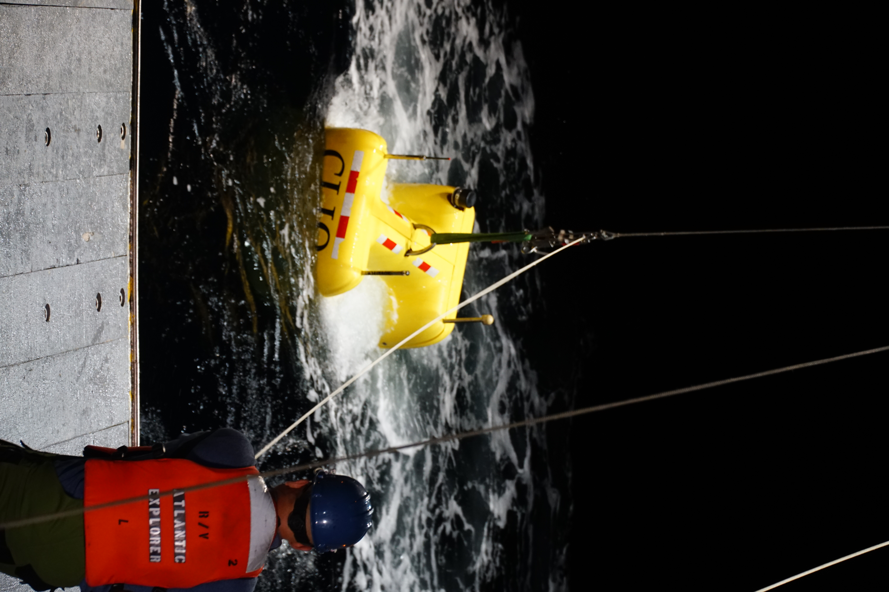

My research focusses on the degradation of particulate organic matter, and its enzymatic degradation in the upper ocean using liquid-chromatography mass spectrometry. Ranging from culture and molecular biology to field observations and global biogeochemical cycling, I am interested in better understanding and constraining carbon, nitrogen, and trace metal cycling in the ocean.



